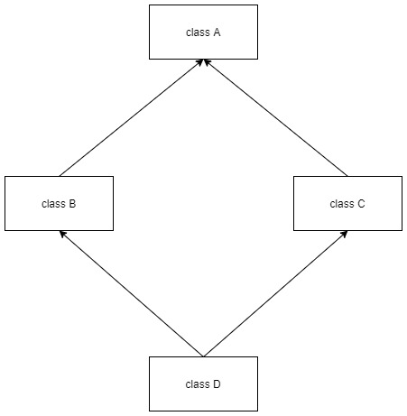
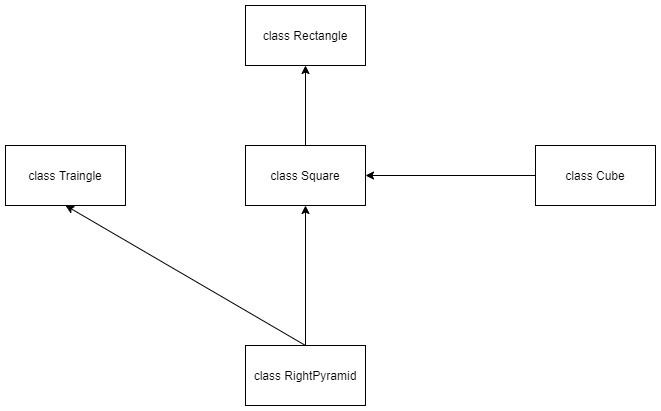

super()¶
In inheritance, the subclass (or a child class) inherits from the superclass (or a parent class).
The special method
super()allows us to refer to the superclass implicitly.Lets have a look how
super()works by looking at the code:
Note: Calling super() alone returns a temporary object of the superclass
class Person:
def __init__(self, name, age, sex):
self.name = name
self.age = age
self.sex = sex
def __str__(self):
return f"Person: {self.name}, {self.age}, {self.sex}"
class Student(Person):
def __init__(self, name, age, sex, id):
# Same as calling: Person.__init__(self, name, age, sex)
super().__init__(name, age, sex)
self.id = id
def __str__(self):
return f"Student({self.id}): {self.name}, {self.age}, {self.sex}"
person = Person(name="Jimmy Anderson", age="25", sex="Male")
print(person)
student = Student(name="Rachel Smith", age="28", sex="Female", id=101)
print(student)
Person: Jimmy Anderson, 25, Male
Student(101): Rachel Smith, 28, Female
super() in-depth¶
super()also takes two parameters:subclass
object of subclass (usually
self)
In above example, calling
super(Person, self).__init__(name, age, sex)is same assuper().__init__(name, age, sex).Sometimes, usually in multiple inheritance, it is helpful to call method from superclass at different lelel instead of immediate superclass.
class A:
def __init__(self):
self.message = "Hello, World!"
def welcome(self):
print(self.message)
class B(A):
def __init__(self, name):
self.name = name
def welcome(self):
print(self.name, self.message)
class C(B):
def __init__(self):
self.message = "Hello, World Again!"
def welcome(self):
super(B, self).welcome()
c = C()
c.welcome()
Hello, World Again!
In the above example, By providing argument subclass as
Btosuper()method, we are causing it to searchwelcome()method just one level above classB, in our case, classA
Note: super() without any parameters is sufficient in most of the scenarios.
Method Resolution Order (MRO)¶
Like most object-oriented programming language, Python also supports a form of multiple inheritance as seen above in example.
class SubClass(SuperClass1, SuperClass2, SuperClass3):
<statement-1>
...
...
...
<statement-N>
In its simplest form, the search of attributes and methods are carried out as depth-first, left to right, not searching twice in the same class where there is an overlap in the hierarchy.
In above syntax, if an attribute is not found in
SubClass, it is then searched inSuperClass1, and then inSuperClass2and search goes on recursively. (MRO)MRO tells the Python interpreter to search for the inherited attributes.
The search process, in fact, is slightly complex than described above. The MRO changes dynamically to support cooperative calls to
super().Dynamic resolution is important in cases of complex inheritance when there are one or more diamond relationships. In such cases, superclass can be accessed through multiple ways from baseclass.
In order to make baseclass being accessed more than once, the dynamic algorithm (MRO) linearizes the search order in a way that preserves the left to right ordering, calling superclass only once.
Note: Every class has __mro__ attribute as well as mro() method to inspect the order.
More on MRO: https://www.python.org/download/releases/2.3/mro/
Lets have a look at a code below:

class A:
def __init__(self, message):
self.message = message
def greet(self):
print(self.message)
class B(A):
def __init__(self, message):
super().__init__(message=message)
def greet(self, name):
print(f"{name}, {self.message}")
class C(A):
def __init__(self, message):
super().__init__(message=message)
def greet(self, name, id):
print(f"{name}({id}), {self.message}")
class D(B, C):
def __init__(self, message):
super().__init__(message=message)
print(D.__mro__)
print(D.mro())
(<class '__main__.D'>, <class '__main__.B'>, <class '__main__.C'>, <class '__main__.A'>, <class 'object'>)
[<class '__main__.D'>, <class '__main__.B'>, <class '__main__.C'>, <class '__main__.A'>, <class 'object'>]
Another example, demonstrating MRO

class Rectangle:
def __init__(self, length, width):
self.length = length
self.width = width
def area(self):
return self.length * self.width
def perimeter(self):
return 2 * self.length + 2 * self.width
class Square(Rectangle):
def __init__(self, length):
super(Square, self).__init__(length, length)
class Cube(Square):
def surface_area(self):
face_area = super(Square, self).area()
return face_area * 6
def volume(self):
face_area = super(Square, self).area()
return face_area * self.length
class Triangle:
def __init__(self, base, height):
self.base = base
self.height = height
def area(self):
return 0.5 * self.base * self.height
class RightPyramid(Square, Triangle):
def __init__(self, base, slant_height):
self.base = base
self.slant_height = slant_height
super().__init__(self.base)
def area(self):
base_area = super().area()
perimeter = super().perimeter()
return 0.5 * perimeter * self.slant_height + base_area
print(RightPyramid.__mro__)
pyramid = RightPyramid(2, 4)
print(pyramid.area())
(<class '__main__.RightPyramid'>, <class '__main__.Square'>, <class '__main__.Rectangle'>, <class '__main__.Triangle'>, <class 'object'>)
20.0
When desigining inheritance, you should consider some of the best practices, like:
Identify interfaces: Interfaces define methods only but not the implementation and should be overridden. (Sometimes called Abstract Base Class: ABC)
Identify mixins: Mixins bundle together related implementations to be used in child.
Inherit from one concrete superclass, and several interfaces or mixins
Frequently used classes can be joined together
Use composition over multiple inheritance, when possible: Finding a way of using a class as an attribute instead of inherting it.